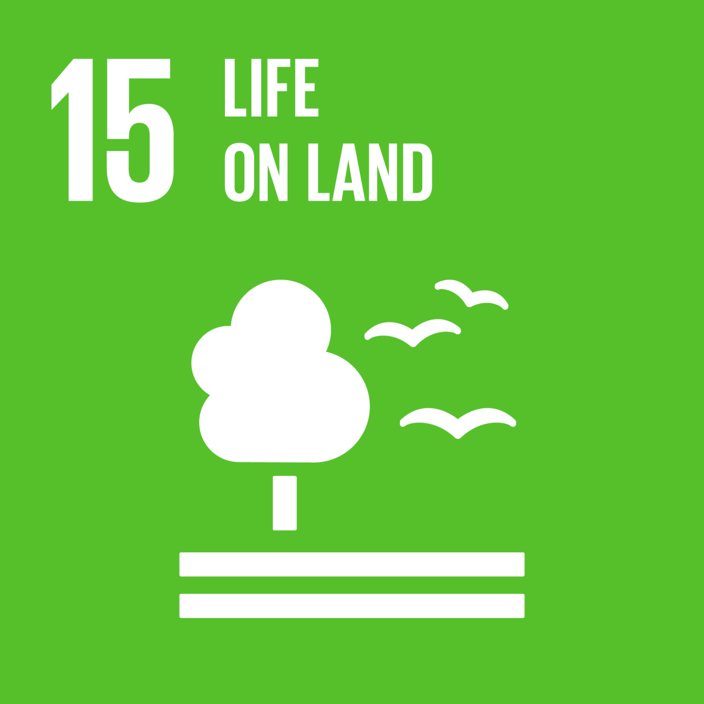
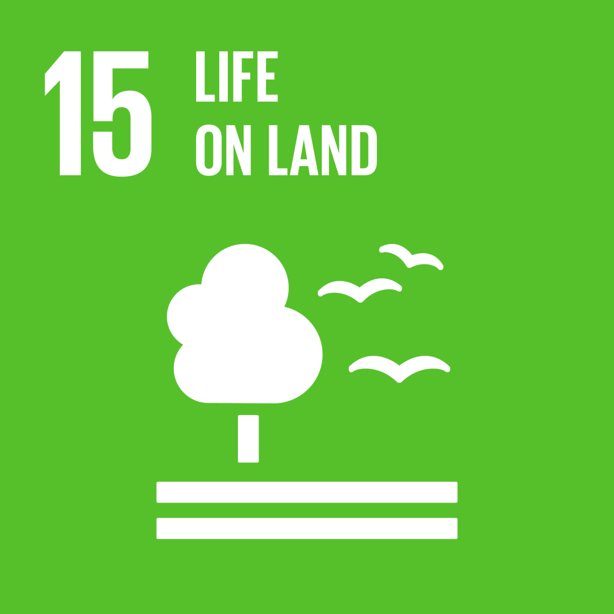

Approvvigionamento sostenibile degli ingredienti
Punti Chiave
- Tutela della biodiversità, agricoltura sostenibile e prevenzione della deforestazione
- Azione per il clima
- Benessere animale
- Sostegno ai piccoli agricoltori e sviluppo delle comunità locali
- Trasparenza nella catena di fornitura
Analisi
Ferrero adotta un approccio mirato alla rigenerazione degli ecosistemi e alla tutela delle risorse naturali lungo le sue filiere agricole.
L’azienda si impegna su diversi fronti per contrastare la deforestazione e promuovere pratiche di produzione sostenibile: dall’agricoltura rigenerativa per le nocciole, all’agroforestazione per il cacao, fino a soluzioni basate sulla natura per la filiera dell’olio di palma.
Nel settore del cacao, Ferrero partecipa alla Cocoa and Forest Initiative, con l’obiettivo di eliminare la deforestazione e rafforzare la resilienza climatica delle comunità agricole. Un esempio significativo è la distribuzione di oltre 775.000 alberi autoctoni in Costa d’Avorio per progetti di riforestazione, un risultato che ha superato le aspettative iniziali.
Per l’olio di palma, Ferrero partecipa a progetti pilota che integrano biodiversità e controllo dei parassiti, riducendo l’uso di pesticidi sintetici grazie all’introduzione di piante locali che attraggono insetti benefici
Nella filiera delle nocciole, Ferrero promuove tecniche di agricoltura rigenerativa attraverso la Ferrero Hazelnut Company. Le pratiche adottate includono la gestione integrata dei parassiti, la salvaguardia della salute del suolo e dell’acqua, e l’ottimizzazione della nutrizione delle piante.
La lotta al cambiamento climatico è strettamente correlata alla produzione degli ingredienti. Ferrero sta utilizzando strumenti come le valutazioni LCA (Life Cycle Assessment) per calcolare l’impatto carbonico dei principali ingredienti e pianificare strategie per la riduzione delle emissioni lungo l’intera filiera.
Nel caso delle nocciole, è stato condotto uno studio approfondito per individuare le fonti principali di emissioni e sviluppare un piano di intervento mirato.
Con l’introduzione della Ferrero Dairy Charter, l’azienda ha stabilito linee guida precise per garantire il benessere degli animali nella filiera lattiero-casearia. La Carta include "Requisiti di base" (conformità normativa e codice etico) e iniziative avanzate "Go Beyond", volte a promuovere un miglioramento continuo attraverso la collaborazione con esperti, università, ONG e partner industriali.
Ferrero è attivamente impegnata nel miglioramento del reddito e delle condizioni di vita degli agricoltori, in particolare nel settore del cacao. Con oltre 1.700 VSLAs (associazioni di risparmio e credito) che coinvolgono quasi 47.000 membri, l’obiettivo è raggiungere quota 2.000 entro il 2025, favorendo l’inclusione economica e sociale nelle comunità rurali.
In Malesia, l’azienda promuove iniziative per migliorare le condizioni di lavoro dei migranti e implementare pratiche di reclutamento etico nella filiera dell’olio di palma.
Un principio cardine per Ferrero è la tracciabilità delle materie prime, oltre il 90% degli ingredienti principali è tracciabile fino alla fonte, con l’applicazione di standard internazionali e certificazioni ai fornitori. L’azienda utilizza anche tecnologie avanzate, come la mappatura satellitare (es. sistema Starling), per monitorare le forniture di cacao e olio di palma e assicurare l’assenza di deforestazione.
Ferrero dimostra un impegno solido e articolato nella gestione sostenibile degli ingredienti, con una visione che integra aspetti ambientali, sociali e di governance (ESG).
L’azienda non si limita a rispettare le normative, ma punta a guidare il cambiamento attraverso innovazione, trasparenza e collaborazioni strategiche. Questo modello di approvvigionamento garantisce non solo la qualità dei prodotti, ma contribuisce anche alla rigenerazione degli ecosistemi e al progresso delle comunità coinvolte.
Come ci allineiamo agli Obiettivi di Sviluppo Sostenibile (SDG)


 
